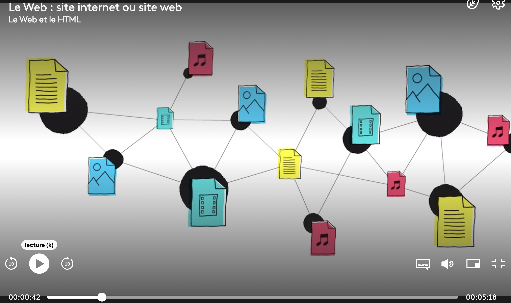
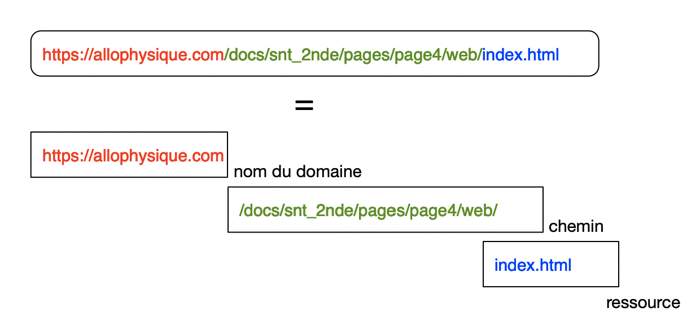
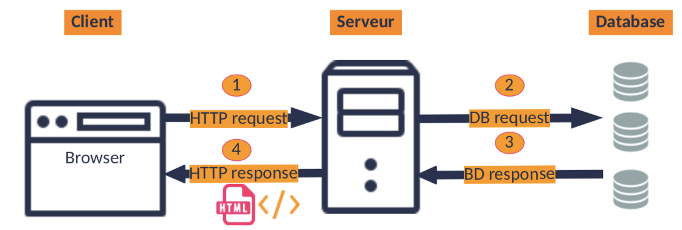
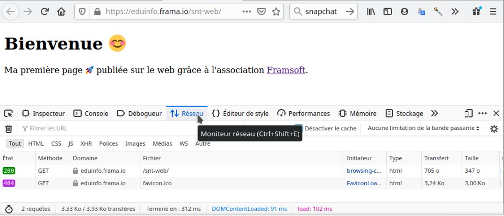

modele client serveur
Le Web et les documents hypertexte
Le web est un de ces services qui consiste à pouvoir naviguer sur des pages web reliées entre elles par des liens hypertextes.
- Une brève introduction:

mooc SNT: Internet et le Web
- le rôle du navigateur: présenter et rendre les pages interactives

histoire du web - Delagrave
Il existe plusieurs logiciels navigateurs (Mozilla, Chrome, Safari,…). Et pourtant, malgré cette diversité et ces évolutions du langage, ceux-ci vont interpréter ces fichiers et afficher les pages (presque) de la même manière car ils se réferent tous aux mêmes recommandations, qui sont les normes dictées par le w3c.
Une petite différence peut exister pour le rendu d’une même page, mais avec plusieurs navigateurs différents. Cela est du aux propriétés par défaut utilisées par le navigateur pour l’affichage des différents éléments html de la page.
Bilan: Le Web fonctionne avec des documents qui sont interconnectés par des hyperliens. Le web necessite d’utiliser un logiciel appelé navigateur qui sert à présenter les pages, surfer, mais aussi remplir des formulaires, interagir avec la page.
Cette navigation sur le web est possible grâce à la relation client-serveur du navigateur avec le serveur qui heberge la page. Ce serveur possède une adresse sur le net que l’on traduit de manière symbolique grace à l’URL. Cette relation necessite d’utiliser des protocole de communication, comme http.
Adresse d’une page web: URL
Uniform Ressource Locator: où est la page?
Une URL (Uniform Resource Locator) est l’adresse d’une page web. Elle est composée de 3 parties:
http://ouhttps://qui correspond au protocole de communication client-serveur développé pour le web.- Un nom de domaine, souvent une marque, une entreprise, une association, …
- un chemin qui pointe vers une ressource ou page précise.
- la ressource
Par exemple, la page html que vous consultez, fait partie du domaine allophysique.com et se trouve à l’emplacement /docs/snt_2nde/pages/page4/web/index.html:
https://allophysique.com/docs/snt_2nde/pages/page4/web/index.html
Cette URL est construite en 3 parties distinctes:
nom de domaine / chemin / ressource

Le modèle client-serveur
Activité d’introduction: Le Web nous traque
Do Not Track explore les différentes manières dont le Web moderne enregistre et traque nos activités, nos publications et nos identités.
Debut de la vídeo: je sais que où vous habitez et que vous avez une belle journée je sais que vous utilisez un PC... Comment fait le site pour savoir ceci ? Quelles informations ai-je envoyé (sans le vouloir) pour charger la page?
Client -> Serveur
Un système informatique fonctionne sur le modèle client-serveur : L’ordinateur client a besoin d’établir des connexions avec un ordinateur serveur pour une grande partie des services dont il a besoin (consulter une base de données, communiquer, ouvrir des pages internet, charger des vidéos…).
Une fois la connexion établie, l’ordinateur serveur lui répond en lui renvoyant les données necessaires.

modele client serveur
mode client-serveur. Un serveur peut repondre aux requetes de multiples clients

Mais alors ici, le serveur connaissait des informations sur le client. Pourquoi?
Le protocole HTTP
Usage du navigateur
Le navigateur est le logiciel qui permet d’utiliser le Web. Il se connecte au serveur à l’adresse définie par l’URL.
Il envoie une requete pour demander la ressource à l’aide du protocole HTTP.
HTTP : HyperText Transfert Protocol, permet au navigateur de demander une page sur le reseau et au serveur de la transmettre.
Dans le protocole HTTP, une méthode est une commande spécifiant un type de requête, c’est-à-dire qu’elle demande au serveur d’effectuer une action. En général l’action concerne une ressource identifiée par l’URL qui suit le nom de la méthode. (definitions issues de https://fr.wikipedia.org/wiki/Hypertext_Transfer_Protocol)
Le navigateur utilise souvent la méthode GET lors de l’envoi d’une requete:

observation de la requete GET à l'aide de l'outil reseau du navigateur
Contenu: données et metadonnées
Dans le fichier de reponse, il y a 2 parties :
• Une partie concerne l’en-tête : des métadonnées sur le document • L’autre partie est constituée des données à afficher (balises HTML)
Du côté client, il y a aussi des métadonnées. C’est ici que l’on retrouve :
- Information de la methode GET
- url demandée (non de domaine de serveur
- Accept (text/html, fr…)
- Site depuis lequel la demande est effectuée
MAIS AUSSI, des informations partagées (et qui ne devraient pas l’être) qui devraient faciliter la session avec le site demandé : les cookies.
| Champ d’en-tête | Signification | Exemple |
|---|---|---|
| Accept | Les types de contenu que le client peut traiter ; si le champ est vide, il s’agit de tous les types de contenu. | Accept: text/html, application/xml |
| Accept-Charset | Quels jeux de caractères le client peut afficher. | Accept-Charset: utf-8 |
| Cookie | Cookie stocké pour ce serveur | Cookie: $Version=1; Content=23 |
| Content-Length | Longueur en octets | Content-Length: 212 |
| Content-Type | Type MIME: text/plain pour les fichiers texte, application/.. pour le reste | Content-Type: application/x_222-form-urlencoded |
| Date | Date et heure de la demande | Date: Mon, 9 March 2020 09:02:22 GMT |
| Host | Nom de domaine du serveur | Host: exemple.fr |
| Referrer | URL de la ressource à partir de laquelle la demande est faite (c’est-à-dire à partir de laquelle le lien a été créé) | Referrer: https://exemple.fr/index.html |
| User-Agent | navigateur du client | Mozilla/5.0 (Windows NT 10.0; Win64; x64) AppleWebKit/537.36 (KHTML, like Gecko) Chrome/80.0.3987.132 Safari/537.36 |
reseau P2P
C’est un mode d’organisation sur internet où toutes les machines se comportent alternativement comme clients ou serveurs.
mode P2P. Chaque machine joue alternativement le rôle de client et de serveur

Ce mode P2P connait un regain d’interet avec les Blockchains qui consistent à repliquer sur de nombreuses machines les preuves chifrées et vérifiables d’un ensembles d’informations enregistrées. (monnaies virtuelles)
sécurité et confidentialité
Ce que le moteur de recherche appelle des données échangées (entre services de la même entreprise), sont vos données personnelles. Votre identité, vos contacts, la durée desappels, date, titres de vidéos, musiques consultées, historique des coord GPS, adresse IP, données des capteurs de l’appareil, requete lors des recherches, historique de navigation…
Pour limiter ses traces sur le Web, et reduire cette collecte de données qui vous concernent, vous pouvez:
- dans le navigateur Mozilla : effacer les traces : bouton bibliothèqe, Historique, marques pages et plus encore > Historique > Effacer l’historique recent (cocher au choix : historique, historique des formulaires et des recherches, cookies et câche) ET Données > préférence des sites
- paramétrer le navigateur : menu > Options > Vie privée et sécurité (Il y a plusieurs niveaux de sécurité). Dans Identifiants et mots de passe > afficher les mots de passe. Dans cookies et données > recherche la présence d’un cookie de connexion au site du lycée…
- et Vie privée : blocage de contenus : toujours, afin de bloquer les contenus tiers qui peuvent ralentir la navigation ou distraire.
Liens
-
Où sont stockés les cookies?: maleka.com ou sont stockées les cookies sur win10?
-
http cookie dans l’en-tête :
-
Accepter ou refuser les cookies tiers. La liste :-o)